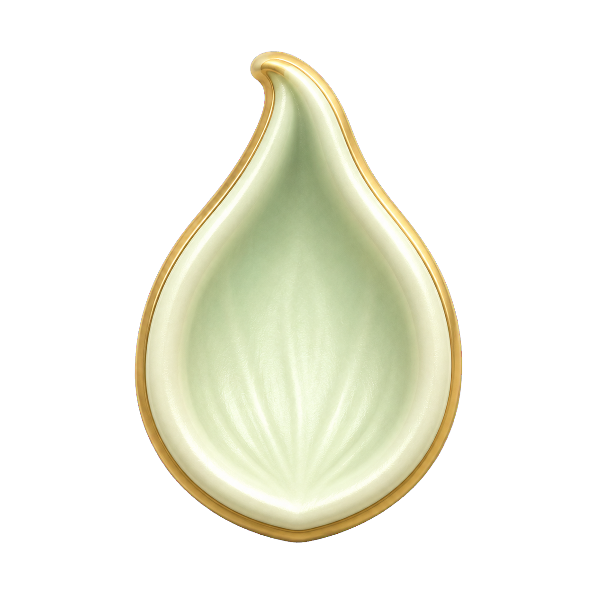
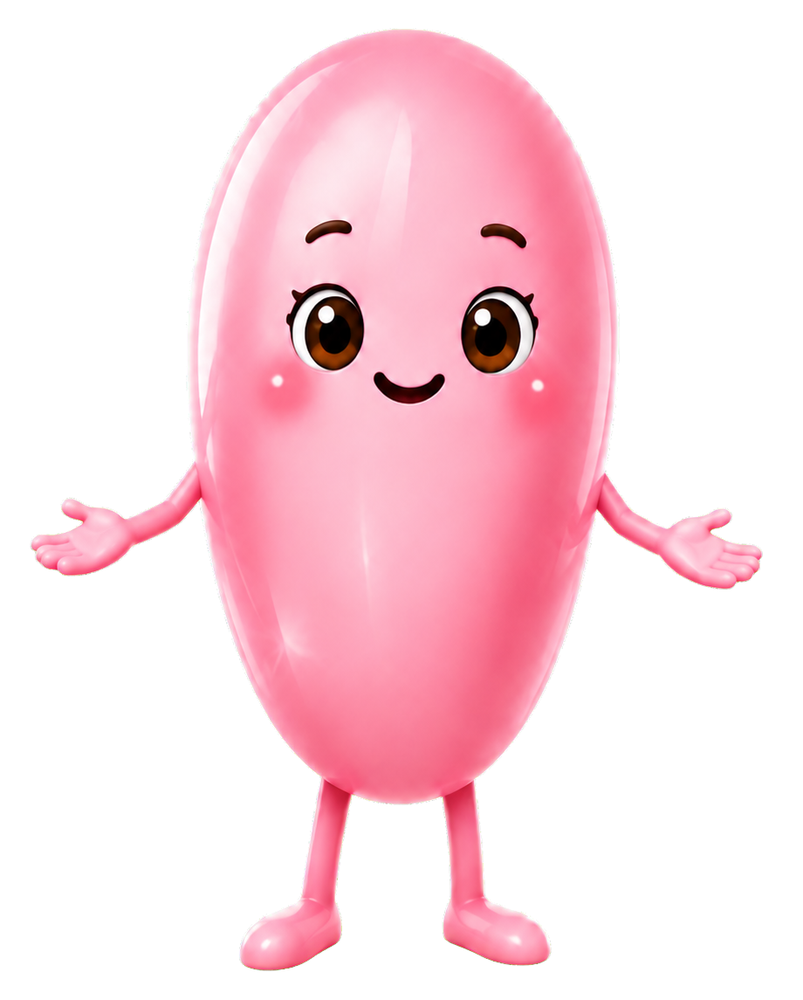
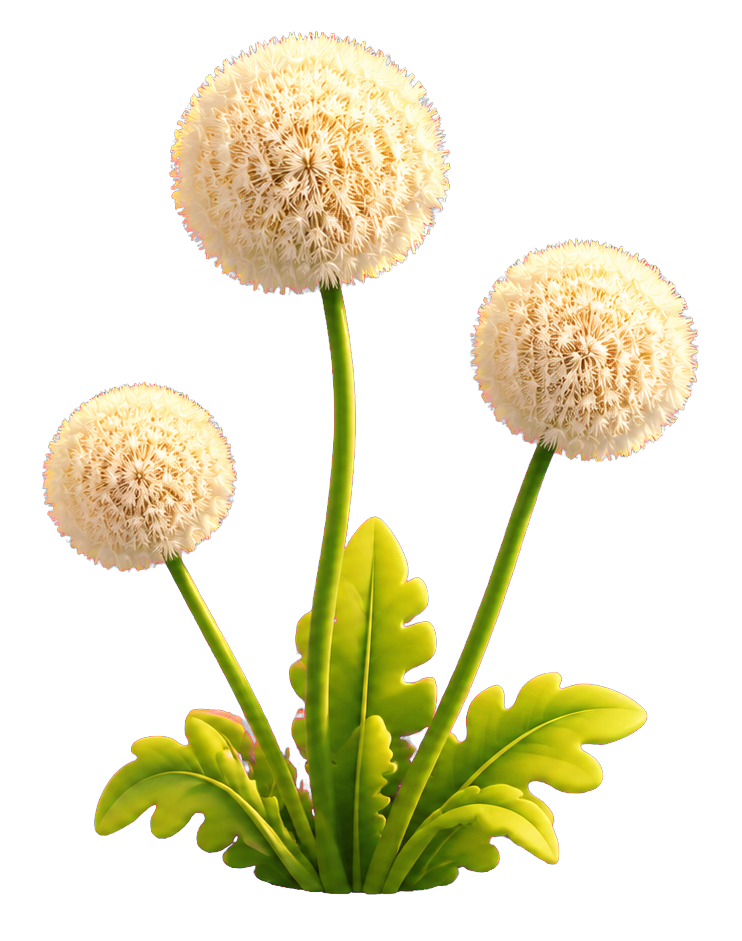
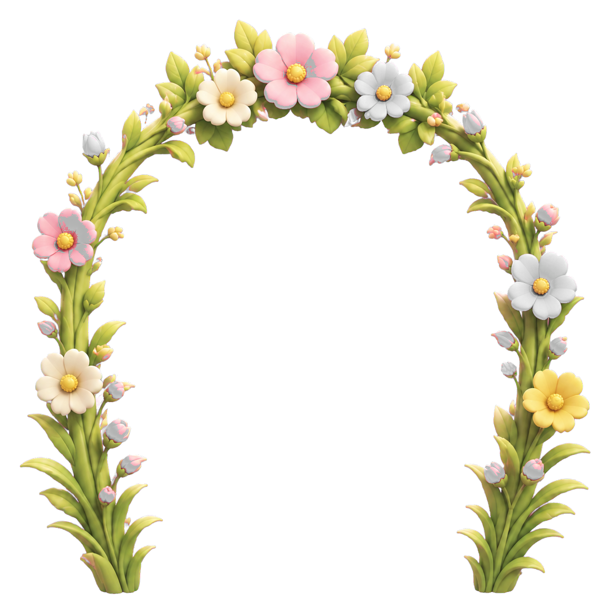
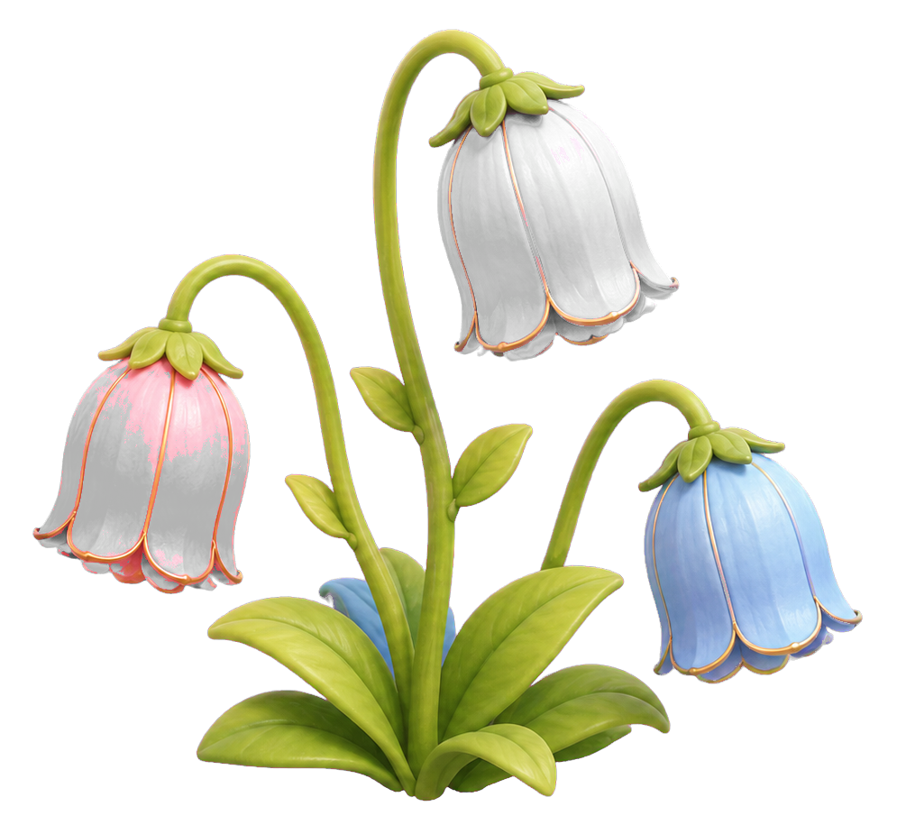

Разбуди одуванчики
Нажми и спокойно удерживай кнопку «Дую»



1

2
3

Цветочная полянка
На Цветочной полянке уснул волшебный ветерок. Поможем Яшке разбудить цветы?
Цветочная полянка проснулась!
Ты прошёл 3 испытания и получил 3 балла.